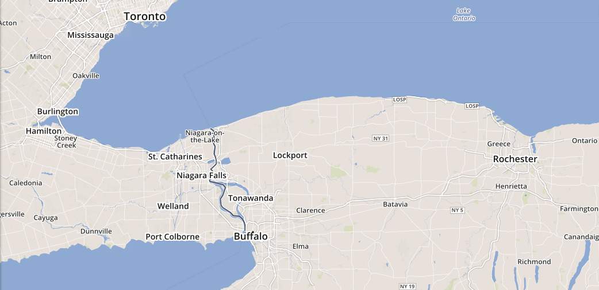
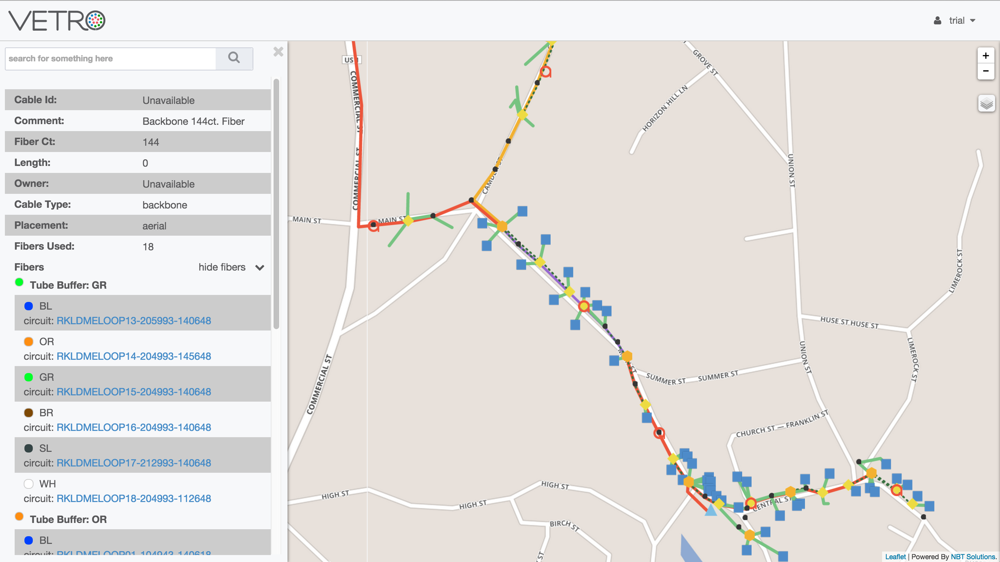
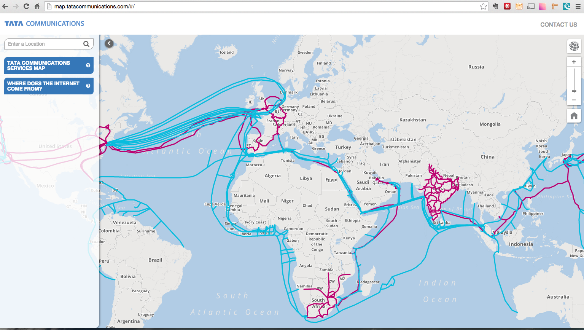
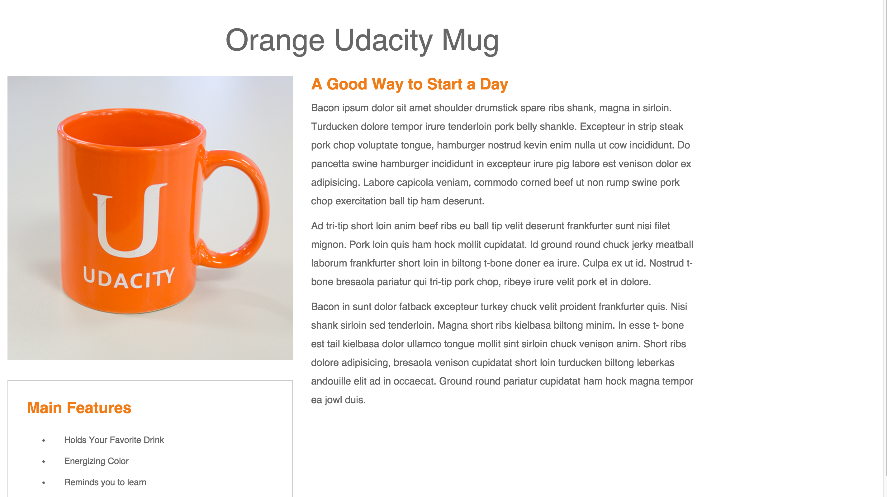

Sean Myers
Co-Founder, NBT Solutions
We Build Map-Based Data Visualization Tools

Featured Work

VETRO FiberMap
Link to project

Tata Communications
Link to project

Udacity
Link to repo
VETRO FiberMap
VETRO is a product that will help small and mid-sized broadband providers determine their ROI before a single showvel is placed into the ground.